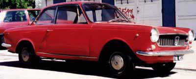
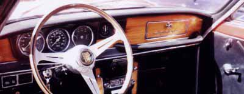
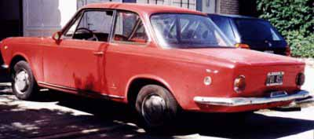

Carrozzeria Vignale · Fiat
Argentinian cars by Vignale
From 1966 to 1970 Fiat Argentina sold Fiat 800 Spiders and Coupés Vignales retaining the same specifications as the italian model but with the smaller 797cc power unit, hence 800 Spider and Coupé.
In the same period, the Fiat 1500 Coupé Vignale was also produced under license. Today such cars are extremely rare and are very well considered by local collectors. Please find hereafter extensive information about this modell:
Fiat 1500 Coupé Vignale (1966-1970)

| Year | Units produced |
|---|---|
| 1966 | 1,428 |
| 1967 | 1,355 |
| 1968 | 1,045 |
| 1969 | 1,200 |
| 1970 | 200 |
| Total | 5,228 |
Production span: 1966-1970.
Cars were made by local’s Fiat Concord, based on the Fiat 1500 C floorpan (2505 mm) with an upgraded version of the reliable 1481 cc pushrod unit of the standard car. This featured diferent cam timings as well as higher lift and compression being 9:1, a Weber 34 or Solex 34 carburator was adopted. Power: 83 bhp SAE at 5500 rpm. 4 speed all syncronomesh gearbox. Suspension retained the saloon layout.
Modified suspension links at the front being adopted through the model’s evolution as the result of motorsport experience. Wheels were steel discs with hub caps as standard in 13x4.5 inches, optional 13x5 steel with ventilation holes. Tyres 5.60x13 crossply. Brakes were plain discs at the front, aluminium drums at the rear with servo-assistance. Weight was 1010 Kg. Dimensions: length: 4360mm, width: 1530mm, heigth: 1350mm, front track: 1295mm, rear track 1272mm, Front overhang: 765mm, rear overhang: 1090mm. Estimated top speed 160 Km/h. All other mechanical specification retained Fiat 1500 Saloon practice. On the year 1969 the engine was enlarged to 1625 cc and a new competition homologated 5 speed gearbox was offered as an option. This enlargement provided more torque rather than power.

On the equipment chapter the 1500 Coupé Vignale took distance from the saloon featuring:
- Wooden Nardi steering wheel.
- Wooden dashboard.
- Rev-counter, speedometer and minor instruments in independent circle dials.
- Interior opening for boot, bonnet and fuel cap.
- Underbonnet and boot lighthing.
- Electric windows opening as an option.
- Motorola radio as an option.
- Independent front bucket seats.
- Rear defroster.
- Opening rear windows.
- Colours available were: White, red, silver, dark grey, mustard, metallic green, bordeaux, light blue, the later four being available for late cars.
- Engines numbers were 115 C 038.
- Chassis numbers were 115 C 0636.

1500 Coupés Vignale earned a reputation of strong and stilysh coupés with a sporting edge, notably because of oficial entries of the Fiat team in period rallyes and circuit races. It provided first ever official seat for later F1 star Carlos Reutemann, who campaigned Vignale´s Coupés in local rallyes. Today such coupés have risen to the myth and cult status between local collectors, as they symbolise the golden era of local production with such extraordinary machines for the wealthy connoisseur, as it wasn’t said before, the Vignale’s Coupés almost doubled the price tag of the basic Saloon, making it even more desirable.
Information and pictures thanks to Diego Marin.